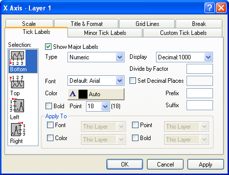

Inhalt |
| Unten |
Standardmäßig ist dies die untere X-Achse (außer die X- und Y-Achse wurden vertauscht oder wenn Sie Balkendiagramme bearbeiten). |
|---|---|
| Oben |
Standardmäßig ist dies die obere X-Achse (außer die X- und Y-Achse wurden vertauscht oder wenn Sie Balkendiagramme bearbeiten). |
| Links |
Standardmäßig ist dies die linke Y-Achse (außer die X- und Y-Achse wurden vertauscht oder wenn Sie Balkendiagramme bearbeiten). |
| Rechts |
Standardmäßig ist dies die rechte Y-Achse (außer die X- und Y-Achse wurden vertauscht oder wenn Sie Balkendiagramme bearbeiten). |
| Vorne |
Standardmäßig ist dies die vordere Z-Achse. |
| Hinten |
Standardmäßig ist dies die hintere Z-Achse. |
Beachten Sie, dass Sie von der Bearbeitung einer Achse zu einer anderen wechseln können, ohne das Dialogfeld Achse schließen zu müssen, indem Sie eine andere Achse im Listenfeld Auswahl auswählen. Um Änderungen zu verwerfen, klicken Sie auf die Schaltfläche Abbrechen (aber bevor Sie auf die Schaltfläche Anwenden klicken).
Aktivieren Sie dieses Kontrollkästchen, um Haupthilfsstrichbeschriftungen anzuzeigen. Diese Anzeige wird auch auf der Registerkarte Beschriftung kleiner Hilfsstriche und auf der Registerkarte Benutzerdefinierte Beschriftung eingestellt.
Wenn Sie die Auswahlliste Typ bearbeiten, müssen Sie eventuell Skalierung und Inkrement auf der Registerkarte Skalierung anpassen. Um z.B. Wochentage als Beschriftung der Hilfsstriche entlang der X-Achse einzusetzen, wählen Sie die Registerkarte Skalierung und setzen die Skalierung von 0 auf 6 und das Intervall auf 1.
| Numerisch |
Die Beschriftungen der Hilfsstriche entsprechen Dezimalzahlen, die den Skalierungsbereich der Achse darstellen. |
|---|---|
| Text aus Datensatz |
Verwendet einen Datensatz als Quelle für die Beschriftung der Hilfsstriche. Sie können einen Datensatz aus jedem beliebigen Arbeitsblatt im Projekt auswählen, indem Sie den Datensatz in das Kombinationsfeld Datensatz eingeben oder dort auswählen (z.B. [Book1]Sheet1!C). Für jede Beschriftung der Hilfsstriche überprüft Origin den Wert, den die Beschriftung der Hilfsstriche im numerischen Typ hätte (und verwendet dabei die Einstellungen der Registerkarte Skalierung). Es setzt den Zahlenwert dann als Zeilennummer und zeigt den unter dieser Zeilennummer stehenden Zellenwert im ausgewählten Datensatz als Beschreibung des Hilfsstrichs. |
| Zeit |
stellt die Beschriftung der Hilfsstriche im 24-Stunden-Format dar, wobei Stunde:Minute:Sekunde:Sekundenbruchteil durch Doppelpunkte getrennt werden. |
| Datum | Stellt die Beschriftung der Hilfsstriche als kalendergenaue Datumsangaben dar. |
| Monat |
Zeigt die Beschriftung der Hilfsstriche als Monatswerte an. Diese Funktion akzeptiert Datensatzwerte als Zahlen oder Text. |
| Wochentag |
Zeigt die Beschriftung der Hilfsstriche als Wochentag an. |
| Spaltenüberschriften |
Verwendet (gezeichnete) Spaltenüberschriften des Arbeitsblatts als Hilfsstrichbeschriftungen. Zeichnen Sie die gewünschten Datensätze aus dem Layer in das Arbeitsblatt. Wählen Sie die Option Spaltenüberschrift aus dieser Auswahlliste aus. Origin erzeugt Hilfsstrichbeschriftungen aus den Überschriften der gezeichneten Spalten. Die aus den Spaltenüberschriften stammende Beschriftung der Hilfsstriche werden entlang der Achse positioniert, so dass die Zahlen der Achsenskalierung den Spaltennummern entsprechen. Ist die numerische Beschriftung des Achsenhilfsstrichs z.B. "5," ersetzt Origin diese Hilfsstrichbeschriftung durch die Überschrift der Spalte 5. (Beim Zählen der Spalten ignoriert Origin alle X-Spalten). Hinweis: Spaltenüberschriften enthalten sowohl den Spaltennamen als auch die Spaltenbeschriftung. Um nur die Beschriftung der Arbeitsblattspalte als Hilfsstrichbeschriftung anzuzeigen, deaktivieren Sie das Kontrollkästchen Spaltenname (in der Gruppe Überschriften) und klicken Sie auf OK. Aktivieren Sie das Diagramm erneut und wählen Sie Fenster: Aktualisieren. |
| Hilfsstrichbeschriftung aus Datensatz |
Wie die Funktion Text aus Datensatz verwendet Hilfsstrichbeschriftung aus Datensatz einen Datensatz als Quelle für die Beschriftungen der Hilfsstriche. Sie können einen Datensatz aus jedem beliebigen Arbeitsblatt im Projekt auswählen, indem Sie den Datensatz in das Kombinationsfeld Datensatz eingeben oder dort auswählen (z.B. [Book1]Sheet1!C). Diese Möglichkeit unterscheidet sich von der Einstellungsmöglichkeit Text aus Datensatz dadurch, dass jeder Wert des Datensatzes einer aufeinander folgenden Hilfsstrichposition zugeordnet wird, beginnend mit dem ersten Hilfsstrich der Achse. Also wird der Wert in Zeile eins des festgelegten Datensatz am ersten Hilfsstrich angezeigt, der Wert in Zeile zwei am zweiten Hilfsstrich usw. |
| Kategorisch |
Zeigt an, dass eine Spalte benutzerdefinierte kategorische Daten enthält. Um eine Spalte so zuzuweisen, dass sie kategorische Daten enthält, müssen Sie die Spalte markieren und aus dem Menü Spalte: Als Kategorisch setzen wählen (oder markieren, mit der rechten Maustaste klicken und Als Kategorisch setzen wählen). Diese Liste zeigt nur an, dass eine Spalte bestimmt wurde, kategorische Daten zu enthalten. |
| Aus Zeichenkette |
Mit dieser Option können Sie die benutzerdefinierten Zeichenketten als Hilfsstrichsbeschriftungen festlegen. Nachdem Sie diese Option ausgewählt haben, wird ein leeres Feld angezeigt, in das Sie die Zeichenketten eingeben können. Bitte verwenden Sie ein weißes Leerzeichen, um die verschiedenen Zeichenketten zu trennen. Wenn Sie eine Zeichenkette verwenden möchten, die ein Leerzeichen in einer der Hilfstrichssbeschriftungen enthält, schreiben Sie die Zeichenkette bitte in Anführungszeichen. Wenn Sie beispielsweise Asia "North America" "South America" eingeben, werden drei Hilfsstrichbeschriftungen festgelegt: "Asia", "North America" and "South America". |
Wählen Sie die Schriftart für große und kleine Hilfsstrichbeschriftungen aus dieser Auswahlliste.
Wählen Sie die Farbe für große und kleine Hilfsstrichbeschriftungen aus dieser Auswahlliste.
Aktivieren Sie das Kontrollkästchen Fett, um die kleinen und großen Hilfsstrichbeschriftungen fett anzuzeigen.
Geben Sie die gewünschte Linienbreite (in Punkten) für die großen und kleinen Hilfsstrichbeschriftungen in das Kombinationsfeld Größe ein oder wählen eine aus.
Die Auswahllistenoptionen unterscheiden sich abhängig von der Auswahl in der Auswahlliste Typ.
Jeder große und kleine Hilfsstrich wird durch die Zahl in diesem Textfeld dividiert. Bitte beachten Sie, dass dieses Textfeld auch Ausdrücke zulässt. Sie können also z.B. alle Hilfsstriche durch 1/3 teilen, indem Sie in das Textfeld 1/3 eingeben.
Um die Anzahl der Dezimalstellen in den numerischen Hilfsstrichbeschriftungen festzulegen, aktivieren Sie dieses Kontrollkästchen und geben Sie den gewünschten Wert in das entsprechende Textfeld ein.
Geben Sie in dieses Textfeld ein Präfix ein, das vor der Beschriftung der großen und kleinen Hilfsstriche eingeblendet wird.
|
Hinweis: Die Textfelder Präfix und Suffix unterstützen spezielle Formatierungsbefehle (z.B. hoch- und tiefgestellt). Weitere Informationen über die Verwendung von speziellen Formatierungsoptionen finden Sie unter Zeichnen: Das Diagramm anpassen. |
Geben Sie einen Präfix in dieses Textfeld ein, das vor der Beschriftung der großen und kleinen Hilfsstriche angezeigt wird. Zum Beispiel: mm, mF, K.
Die Textfelder Präfix und Suffix unterstützen spezielle Formatierungsbefehle, genannt "Escape-Sequenzen" (z.B. hoch- und tiefgestellt). Weitere Informationen finden Sie unter Escape-Sequenzen.
Aktivieren Sie das Kontrollkästchen Schriftart, um die aktuelle Auswahl in der Auswahlliste Schrift auf: Diesen Layer, Dieses Fenster oder Alle Fenster (im aktuellen Projekt) anzuwenden.
Aktivieren Sie das Kontrollkästchen Farbe, um die aktuelle Auswahl in der Auswahlliste Farbe auf: Diesen Layer, Dieses Fenster oder Alle Fenster (im aktuellen Projekt) anzuwenden.
Aktivieren Sie das Kontrollkästchen Punkt, um die aktuelle Auswahl in der Auswahlliste Punkt auf: Diesen Layer, Dieses Fenster oder Alle Fenster (im aktuellen Projekt) anzuwenden.
Aktivieren Sie das Kontrollkästchen Fett, um die aktuelle Auswahl in der Auswahlliste Fett auf: Diesen Layer, Dieses Fenster oder Alle Fenster (im aktuellen Projekt) anzuwenden.